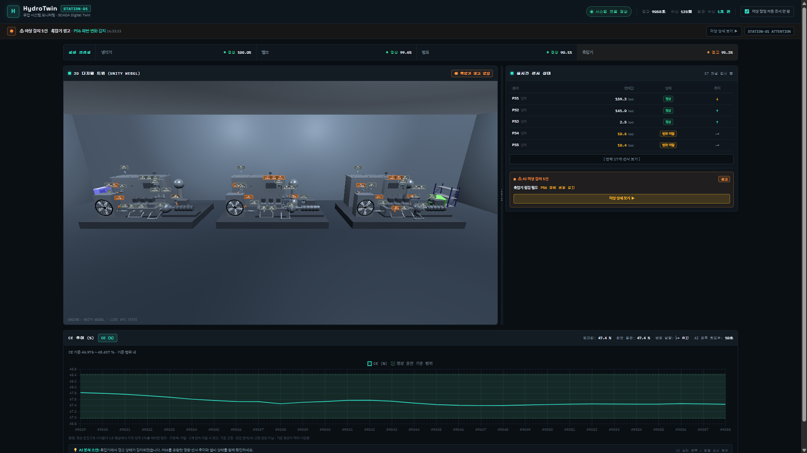

HydroTwin

3대의 유압 설비에서 생성되는 17개 센서 데이터를 실시간으로 분석하고, 부품 상태와 이상 판단 근거를 대시보드와 3D 디지털 트윈으로 보여주는 설비 모니터링 시스템.
- Role
- Unity WebGL · 대시보드 UI · 전체 시스템 통합
- Team
- 4명
- Stack
- ☆Python · Unity · FastAPI · Kafka · LightGBM · Docker · Jenkins
- Built
- 실시간 3설비 모니터링 · 이상 상세 분석 · 자동 재배포
What I did
담당 작업
- 설비 3대의 상태를 한 화면에서 확인하는 Unity WebGL 디지털 트윈 구성
- 이상 감지 상세 팝업과 주요 영향 센서 그래프를 포함한 대시보드 UI 작업
- Kafka · FastAPI · Web · Unity로 이어지는 전체 흐름 통합과 시연 환경 안정화
Troubleshooting 01
작은 데이터셋으로 실시간 시연까지 연결하기
강의실 컴퓨터 사양으로는 대형 데이터셋을 학습하기 어려웠다. 사용할 수 있는 유압 센서 데이터는 상태 예측 모델 학습에 모두 활용하고, 별도의 시계열 생성 LSTM 모델을 추가하는 방향을 택했다.
LSTM이 17개 센서의 시간 흐름을 학습해 가상의 실시간 데이터를 만들도록 구성했다. 덕분에 제한된 학습 환경에서도 세 설비의 데이터가 계속 유입되고, 예측부터 대시보드와 디지털 트윈까지 이어지는 전체 흐름을 시연할 수 있었다.
Troubleshooting 02
AI 에이전트로 흐트러진 개발환경 복구하기
협업 과정에서 목적이 분명하지 않은 디렉터리와 파일이 반복해서 추가되면서, 미리 정한 Git · Jenkins · MLOps 구조와 실제 환경이 어긋나는 일이 생겼다. 문제가 생긴 지점을 문서와 비교해 하나씩 설명하고, 담당 팀원과 함께 개발환경을 다시 정리했다.
이후에는 에이전트에게 기획과 작업 목적을 먼저 명확히 전달하고, 생성된 코드와 환경 변경을 반드시 사람이 확인한 뒤 반영하는 원칙을 공유했다. AI를 빠르게 쓰는 것보다 결과를 검증할 수 있는 작업 기준을 세우는 일이 먼저라는 점을 배웠다.